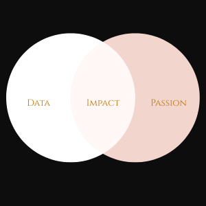

Bagaka Databases aims to humanize quantitative disciplines by promoting information accessibility and diversifying areas of application. Through this platform, you can view the world through a statistical lens and assess under-researched topics that have implications on our health and overall well-being. Our purpose is to use reliable data to evoke discussion, strengthen critical thinking, and empower communities to make informed decisions.
